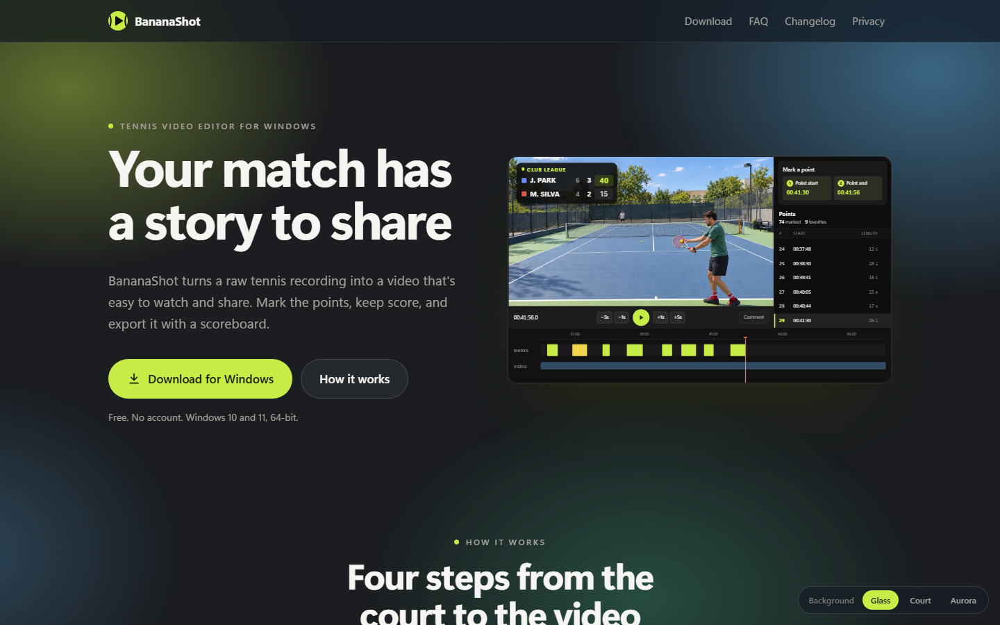
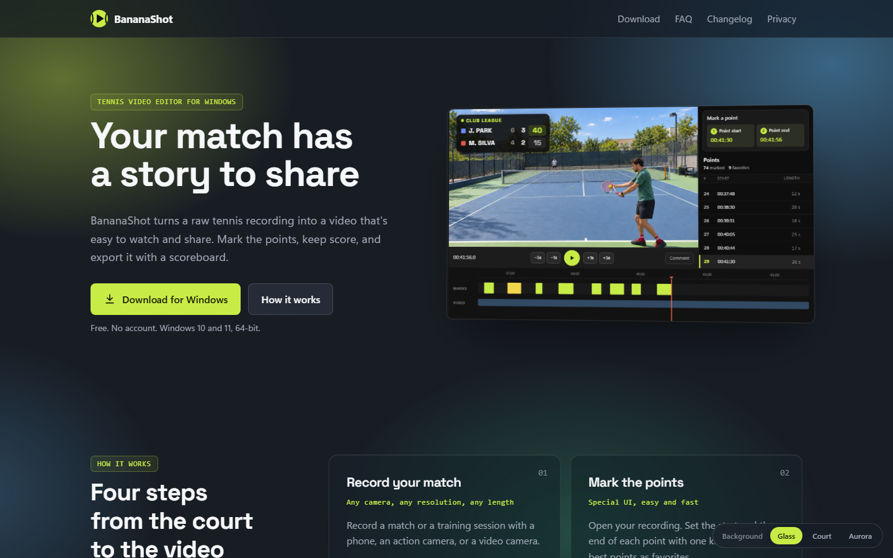
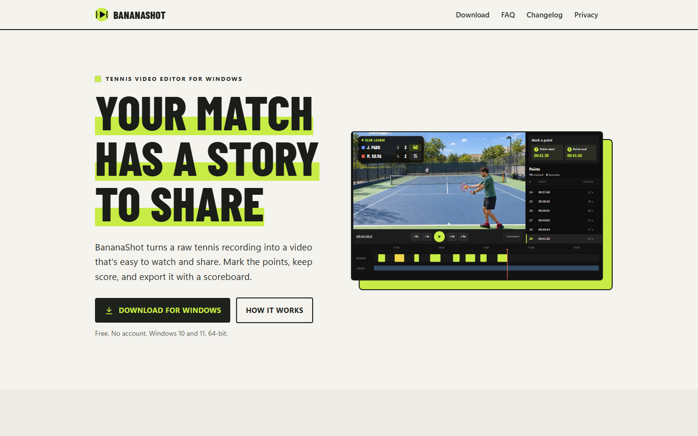

The text of the home page does not change. Each option only adds one CSS file after site.css. All options use the app accent #C8EC46 (Palette.kt) in place of the old lime, also in the demos and the logo. No option uses the near-black #0e0e0e or the faint green eyebrow. Each option has its own type, layout, and section structure.

Large titles, a lot of space, thin rules and large thin numbers. Text and buttons on the left of a smaller hero screenshot. A background effect shows through matte glass parts: switch Glass, Court, or Aurora at the bottom right of the page. The Local and No AI sections are soft bands of their own color, with one tile for each item.

Structured, like a tool for professionals. Section titles in a left column, content on the right. Steps in a 2 x 2 grid, feature rows in large panels, mono tags, a dot grid, a slight 3D turn on the hero. Has the same background effects as A. Cool charcoal, Space Grotesk titles.

A light sports poster. Tall bold uppercase titles with an accent marker, outlined step numbers, hard rules, a solid accent block behind the hero, a dark No AI band, and an accent download block. Warm paper, Barlow Condensed titles.
Compare with the current design. To update the pages after a change in site/public/index.html, run build.sh. The Google fonts load only in the mockups; the real site would host them itself.